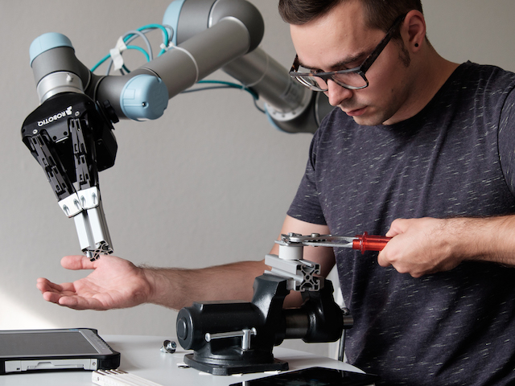

The Origin of Robotics: A Journey from Myth to Machine
Robotics didn't begin in labs—it began in legends. The idea of creating life-like machines has fascinated humanity for thousands of years.
"The term 'robot' was introduced in 1920 by Karel Čapek in his play R.U.R. (Rossum's Universal Robots)"
Early Inspirations from Myth & Legend
Greek Mythology
- Hephaestus, god of craftsmanship, built mechanical servants
- First imagined "automatons" that assisted their creator
Chinese Legends
- Yan Shi (10th century BCE) built a humanoid automaton
- It could move, sing, and impress the king
Jewish Folklore
- The Golem: A clay figure brought to life by mystical words
- Represented early ideas of creating artificial life
But... What Is a Robot?
This is not a simple question. Experts define robots in various ways.
Definitions from Leading Institutions
- Dr. S. S. Verma, Professor of Physics: "A robot means a mechanical device which performs all or more works for humans with maximum efficiency and low cost even in hostile environments under the command of the masters."
- NASA: "A robot is an electromechanical system with sensors, local computing, and actuators, capable of intelligent tasks and real-world interaction."
- Oxford University: "A robot is a machine, often humanoid, designed to perform tasks automatically."
- MIT: "A robot is a physically embodied machine that can sense, compute, and act in the real world."
- IEEE: "A robot is an agentive device intended to act in the physical world to achieve specific tasks."
Unified View: What is a Robot?
In simple terms, a robot is an autonomous or semi-autonomous machine that:
- Exists in the physical world
- Uses sensors to perceive its environment
- Uses computation to process data
- Uses actuators to perform actions
- Is programmable, adaptable, and goal-directed
The Rise of the Machines: From Automata to Autonomous Robots
Early 20th Century – The Birth of Modern Robotics
- A robot may not harm a human or allow harm through inaction
- A robot must obey human orders (unless it conflicts with Law 1)
- A robot must protect itself (unless it conflicts with Laws 1 or 2)
Later: Zeroth Law – A robot may not harm humanity as a whole
Imagination to Industry (1950s-1960s)
- Unimate (1956): First industrial robot working at GM
- Shakey (1966): First mobile robot with AI at SRI
Robots Take Shape (1970s–80s)
- WABOT-1 (1973): First full-scale humanoid robot from Japan
- PUMA (1978): Programmable Universal Machine for Assembly
Robots Reach the World (1990s)
- RoboTuna (1994): MIT's robotic fish that swam with fluid dynamics
- Sojourner (1996): First Mars rover
- AIBO (1999): Sony's robotic pet dog
Humans Meet Their Mechanical Mirror (2000s)
- ASIMO (2000): Honda's advanced humanoid
- Stanley (2005): Stanford's autonomous car won DARPA challenge
Intelligence Awakens (2010s)
- Watson (2011): IBM's AI won Jeopardy!
- Pepper (2014): First social humanoid robot
- Spot (2016): Boston Dynamics' quadruped robot
Robots of Today (2020s)
- Perseverance (2021): NASA's Mars rover with AI
- Ameca (2022): Human-like facial expressions
- Unitree Go2 (2023): Personal companion robot
The Anatomy of a Robot: Building the Machines of Tomorrow
Before a robot can move, think, or learn—it must be built. And like the human body, a robot is more than a collection of parts. It is an integrated system, where every component—mechanical, electronic, and digital—works together to bring intelligence into motion.
Let's explore what makes a robot a robot.
The Physical Body: The Foundation of Robotics
Think of this as the robot's skeleton and skin—the structure that gives it form and movement.
Robots come in all shapes and sizes:
- The strong, rigid arms of an industrial SCARA robot, designed for high-speed precision tasks like circuit assembly.
- The sleek, two-legged stance of ASIMO, designed to mimic human balance and walk in complex environments.
- Or the rolling wheels and rugged treads of a Mars rover, built to traverse rocky alien landscapes.
The shape of the body isn't just aesthetics—it defines what the robot can and cannot do. A robot's body is its toolset, chosen based on its mission.
Sensors: The Eyes and Ears of a Robot
What good is a body if it can't sense the world around it?
Sensors are how a robot sees, hears, and feels:
- Ultrasonic sensors bounce sound waves off nearby objects, letting a robot "hear" its surroundings to avoid obstacles.
- Cameras give a robot vision—essential for object recognition, navigation, or even reading labels and signs.
- Infrared, LiDAR, IMUs, and microphones add even more senses—allowing the robot to build a full picture of its environment.
Just like we rely on our senses to make decisions, robots use sensor data to drive intelligent behavior.
Effectors: The Hands and Feet of a Robot
Now that a robot can perceive—it needs to act. That's where effectors come in.
These are the robot's tools for interacting with the physical world:
- Motors drive its wheels, swing its arms, or rotate its neck.
- Grippers pick up and place items—from pincers to complex five-fingered hands.
- On a Mars rover, effectors lift soil samples and adjust scientific instruments. On a warehouse bot, they carry parcels from shelf to truck.
Just like muscles respond to your brain's commands, a robot's effectors respond to its controller—translating data into movement.
Controllers: The Robot's Brain
And finally, we meet the brains behind the bot.
Controllers are where everything comes together:
- They receive data from sensors.
- They process it, using logic, rules, or machine learning.
- And then they send commands to effectors to make decisions real.
From a tiny microcontroller running a toy robot to a complex AI-powered onboard computer in a driverless car—controllers vary, but the role stays the same.
This is what turns metal into mind—control logic is the difference between automation and autonomy.
When we say "robot," we're not just talking about a machine.
We're talking about a system:
- A body to move
- Senses to feel
- Tools to act
- And a brain to decide
Together, these parts create the intelligent machines that are transforming industries, assisting in hospitals, exploring outer space, and even entering our homes.
The Ethical and Social Implications of Robotics: A Double-Edged Sword
As we march into a world increasingly shaped by robots, we must ask not just how we build them—but why, for whom, and with what consequences?
Robots are more than mechanical helpers. They are mirrors reflecting our values—and sometimes, our vulnerabilities.
Job Displacement: The Dark Side of Automation
Robots don't take breaks. They don't go on strike. They don't get tired. In factories, warehouses, and offices, automation is replacing human labor—fast.
But is it all bad?
While some jobs fade, others emerge: robot technicians, AI ethicists, drone operators, and data analysts. The key lies not in resisting robots—but in preparing people.
The future belongs to those who can adapt, not compete. Our challenge is to ensure that the economic benefits of robotics aren't concentrated in the hands of a few, but uplift society as a whole.
Privacy and Surveillance: The Eyes That Never Blink
A robot fitted with cameras and microphones can be incredibly helpful... or incredibly intrusive.
Imagine a security robot in a shopping mall, silently recording every passerby. Who owns that data? Who decides how it's used?
The more robots we deploy into public and private spaces, the more we must ask:
- Where do we draw the line?
- What are we willing to give up in exchange for convenience or safety?
The challenge is to find a balance—between innovation and the individual's right to privacy.
Safety and Liability: Who's Responsible When Robots Fail?
A robotic arm smashes a product on the factory line. An autonomous car swerves into traffic. A hospital assistant gives a wrong medication cue.
Who's to blame?
- The engineer who built it?
- The company that deployed it?
- The AI that made the decision?
As machines become more autonomous, accountability becomes more complex. We need new legal frameworks, new standards, and new ways of thinking about responsibility in the age of robotics.
The Future of Robotics: A World of Infinite Possibilities
Despite the challenges, the future of robotics shines with promise.
According to the World Economic Forum's Future of Jobs Report, robots and automation will transform over half of all businesses by 2030.
While machines will take on more routine tasks, humans will be freed to focus on creativity, problem-solving, and innovation.
Soft Robotics: The Emergence of Flexible Machines
What if robots could squish, stretch, and wiggle their way through the world?
Soft robotics is making that a reality—with robots inspired by octopuses, worms, and jellyfish. Made from pliable materials, these robots are ideal for:
- Crawling through rubble in search-and-rescue missions
- Delicately handling fragile biological tissues in surgery
- Exploring environments too dangerous for humans or rigid machines
They aren't just soft—they're smart.

Swarm Robotics: The Power of Collaboration
One robot is smart. But a swarm of robots? That's brilliance in motion.
Inspired by insects like ants and bees, swarm robotics focuses on simple machines that—when working together—can perform complex tasks.
Imagine:
- Hundreds of tiny drones surveying disaster zones
- Fleets of bots tending to farms, pollinating plants, and harvesting crops
- Cleaning up oil spills, exploring oceans, or assembling structures autonomously
Human-Robot Collaboration: A New Era of Partnership
As robots grow more capable, their greatest role may not be to replace us—but to work with us.
We're entering an era of co-bots:
- In hospitals, assisting surgeons with millimeter-precision
- In homes, supporting the elderly or disabled
- In factories, taking on dangerous or repetitive work side-by-side with humans
These partnerships rely on trust, design, and safety—because the best robots don't just obey commands—they understand human needs.
Brain-Computer Interfaces: The Ultimate Fusion of Man and Machine
Now imagine controlling a robot with your thoughts.
Brain-computer interfaces (BCIs) are pushing the boundaries of what's possible. Electrodes placed on the scalp—or even implanted—can translate brain signals into commands for machines.
Applications include:
- Letting paralyzed individuals control robotic limbs
- Piloting drones with your mind
- Creating hands-free communication systems
The Benefits of Robotics: Yesterday, Today, and Tomorrow
From clunky mechanical arms to intelligent humanoid assistants, the story of robots is a story of evolution—of machines that learned, adapted, and grew with us.
Let's take a journey through time and witness how robotic benefits have transformed across three key eras: The Past, The Present, and The Future.
| Category | Past (Before 2000s) | Present (2020s) | Future (2030s & Beyond) |
|---|---|---|---|
| Automation | Repetitive factory tasks | AI-driven industrial optimization | Fully autonomous ecosystems with seamless human-machine integration |
| Safety | Took over dangerous tasks | AI-powered workplace safety | Near-zero accidents through real-time risk prediction and mitigation |
| Human Interaction | Limited to manufacturing | Social robots, virtual assistants | Emotionally aware humanoids, companions with personality and empathy |
| AI & Learning | Pre-programmed responses | Adaptive, decision-making systems | Robots with human-like reasoning and moral decision-making capabilities |
| Environmental Impact | Energy-heavy, limited sustainability | Greener robots, lower emissions | Eco-conscious robots using renewable energy and recycling capabilities |
Conclusion: The Journey Ahead
The tale of robotics is not just about circuits and code—it's a story about human ambition, curiosity, and the power of imagination.
From the first gear turning on a factory floor to a robot exploring the surface of Mars, we've come a long way. But this is just the beginning.
We must:
- Engineer with empathy
- Code with conscience
- Create not just machines, but futures worth living in
Robotics is not just a field of study—it is a platform for shaping tomorrow.
The Robot Zoo: Classifying the Creatures of the Mechanical World
Welcome to the Robot Zoo, where instead of lions and tigers, you'll find quadrupeds, flying drones, and shape-shifting softbots. Just like animals in nature, robots come in many forms—and today, we'll classify them like robotic biologists.
Mobility Modes: How Robots Get Around
"If animals crawl, fly, swim, and walk—why should robots be any different?"


Purpose in the World: Application-Based Types
"Some robots build cars, some save lives, and some tutor children."


Smarts and Autonomy: Brain Power Levels
"Not all robots think alike. Some follow orders, some act on instinct."


Structure and Skeletons: What They're Made Of
"A robot's skeleton defines how it moves—like how a snake differs from a cheetah."


Next-Gen Robots: The Evolution is Here
"Some robots breathe like jellyfish, others think like ants. The future is now."


Powered by What? Energy Sources in Robots
"Electric, hydraulic, pneumatic, or hybrid—robots run on more than batteries."


Control Styles: Who's in Charge?
"Some are fully independent. Others still ask for permission."


Trends That Are Changing the World
"The frontiers of robotics are expanding—faster, smarter, smaller."


Robots in Action: Real-World Impact
"From fields to flames, robots go where humans can't—or shouldn't."